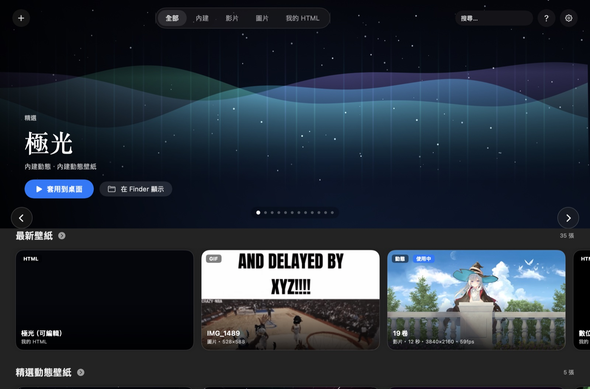
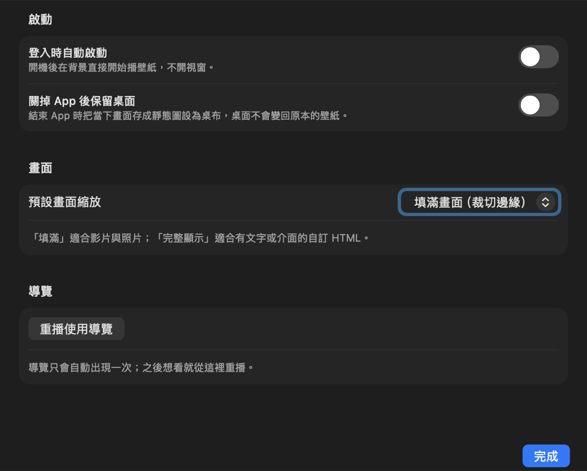

影片、GIF、圖片，或是你自己寫的 HTML/CSS/JS —— 通通可以變成 macOS 壁紙。
畫在系統桌布之上、桌面圖示之下：圖示照樣點、檔案照樣拖、Mission Control 照樣用。

不是「換一張圖」，是把整個桌面換成一個可以跑東西的畫布。
影片（無縫循環）、圖片、GIF、自己寫的 HTML/CSS/JS。拖進視窗就加入壁紙庫。
存檔就即時更新，不用重開 App。改一行顏色、改一段 canvas，桌面立刻跟著變。
上方大張即時預覽（影片真的在播、HTML 真的在跑），每 6 秒自動換下一張。
五步帶你看完「加入壁紙 → 選一張 → 調設定 → 套用」，不用自己摸。
滑鼠移動時壁紙跟著位移幾像素，像隔著一層玻璃看桌面。預設關閉，可調 0–30px。
每 5 分鐘到 3 小時自動換一張，把整個壁紙庫當播放清單跑。
把影片換進 macOS 26 的動態桌布槽，打密碼的畫面播的就是同一支影片；原檔備份、一鍵還原。
看片、玩遊戲開全螢幕時壁紙自動停住；螢幕休眠、鎖定也會停，醒來自己接回去。
NASA 公有領域的星雲、地球、極光、火星、喜馬拉雅……附出處，隨便用。
把一支影片包成雙擊即用的 .app，再做成拖曳安裝的 .dmg 送人。
全部是真實截圖，不是概念圖。

.dmg，打開後把「動態壁紙」拖進「應用程式」。系統設定 → 隱私權與安全性 按「仍要打開」。| DynWall | 一般的動態壁紙 App | |
|---|---|---|
| 自訂 HTML 壁紙 | ✅ 存檔即時熱重載 | ❌ 或要另外裝引擎 |
| 打包成獨立 App | ✅ 影片 + 設定一起包 | ❌ |
| 原始碼 | ✅ 開源（非商業） | ❌ 多為閉源付費 |
| 系統支援 | macOS 13+ / Intel & Apple Silicon | 常見只支援最新版 |
程式碼以 PolyForm Noncommercial 1.0.0 + Share-Alike 釋出：可以自由使用、修改、分享， 但不能拿去賣，改過的版本也必須用同樣的條款開源，並保留原作者署名。
resources/wallpapers/static/CREDITS.md。NASA 不因此背書本專案。